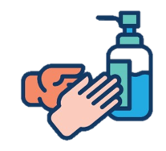
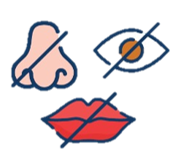
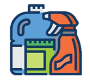

| Lave as mãos com água e sabão por 20 segundos. Esfregue entre os dedos, pulsos e embaixo das unhas. | Utilize Álcool 70º para higienizar os objetos tocados ou quando estiver em local público. | Não compartilhe objetos pessoais. |
|---|---|---|
| Ao tossir ou espirrar cubra a boca ou utilize o cotovelo, antebraço. | Evite tocar os olhos, boca e nariz, caso as mãos não estiverem limpas. | Evite aglomerações, a melhor forma de se prevenir é evitar contato com muitas pessoas. |
| Desinfetar as superfícies e as compras. | Utilize máscara quando for ter contato com muitas pessoas, principalmente em locais públicos. |